01 / Case study
Backlink Automation Pipeline
Problem
The agency runs several brands (HiAgency, Hair Folli, J.Aesthetic, Everyday Clean). It had a 1,818-site guest-post vendor list nobody could vet by hand, citation trackers that had drifted away from what was actually live, and no clear answer to why a local competitor outranked a client.
System
Guest Post Audit · Business
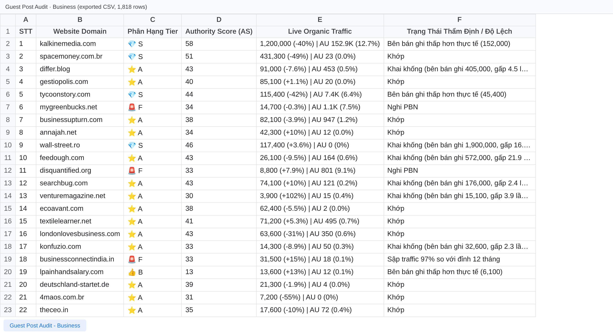
Tier distribution across all 1,818 sites (counted from the export)
S5
A129
B104
C894
F686 · dropped
Tab “Mua ngay” (buy now)
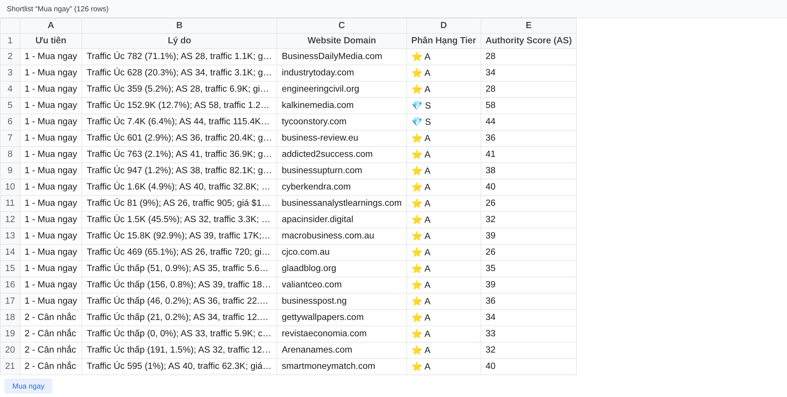
SEO file_Hairfolli · Backlink Tracker (Google Sheets)
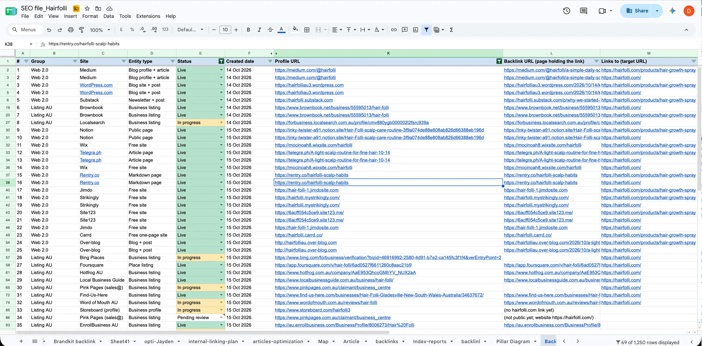
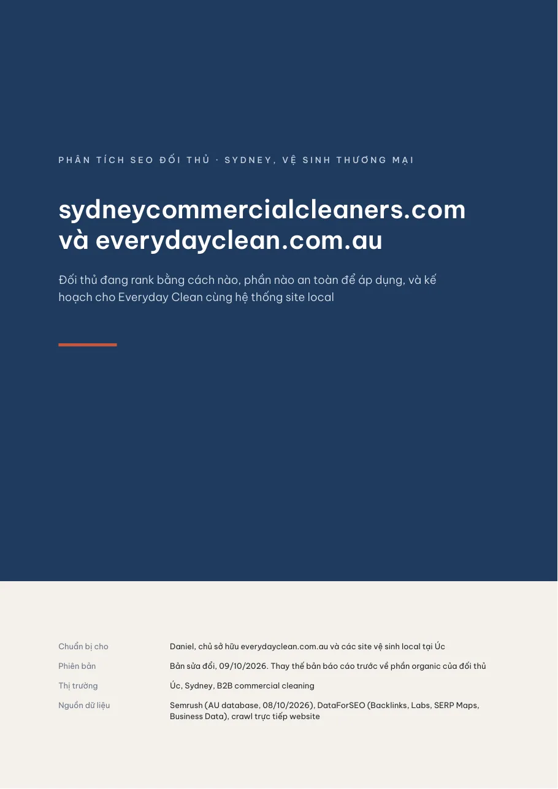
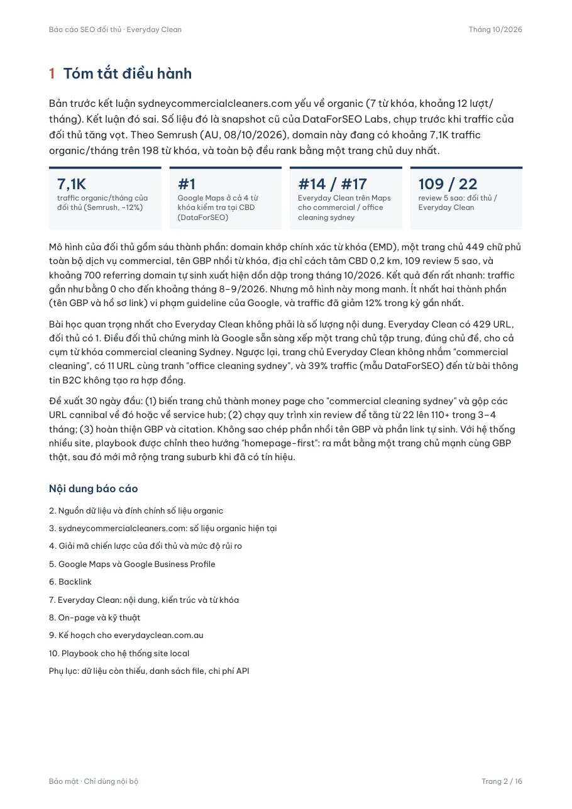
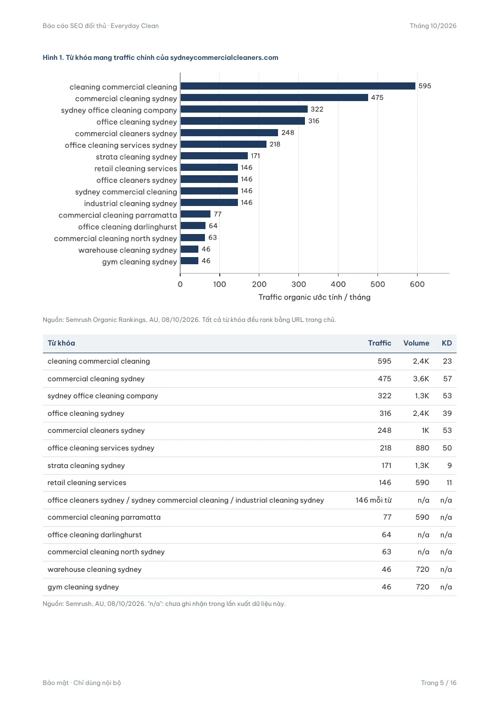
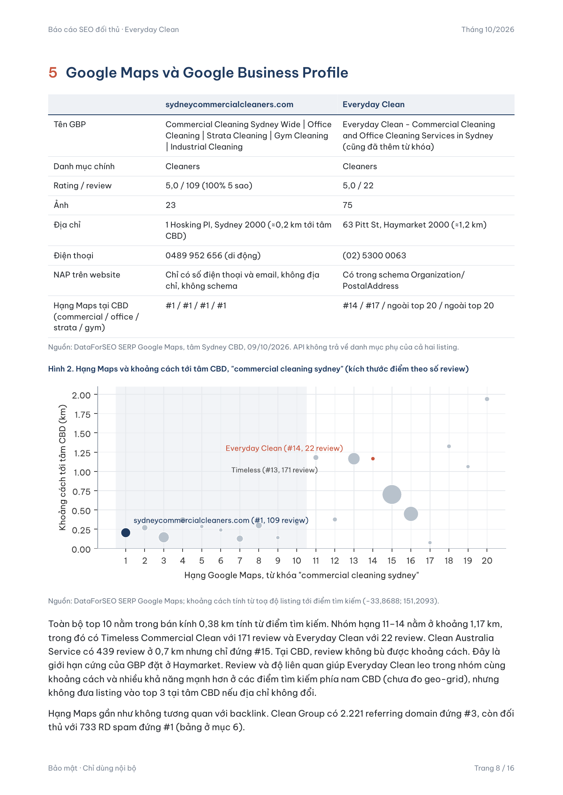
Real pages from the 16-page PDF (rev. 09/10/2026). Sources: Semrush AU, DataForSEO and a direct crawl. The revision corrected an earlier wrong conclusion about the competitor’s organic traffic.
Results
1,818sites audited end-to-end
686F-tier sites recommended to drop
126prioritised shortlist, 16 “buy now”
79citation rows added to Hair Folli’s Off-page list
16page competitor PDF report
02 / Case study
AI Agent Operations
Problem
Running SEO and content for multiple clients meant constant manual chasing: who hasn’t posted, who hasn’t filed a report, which freelancer to talk to, which Business Profile is off-policy, and what to publish next.
System
content-check/run.log
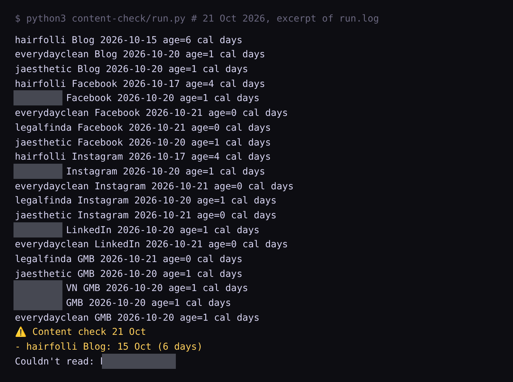
Screenshot slotDiscord: the team channel showing a “⚠️ Content check” / “📝 Task report check” messageNot in the transcripts. Capture it from the Discord app and save as
assets/shot-discord.webp.Screenshot slotUpwork applicant list (Programmatic SEO job)
upwork.com/ab/applicants/2110236566773358493/applicantsBlur freelancer names and photos.Screenshot slotGoogle Business Profile: J.Aesthetic services after cleanup (33 names, 12 courses)From business.google.com, signed in as the profile manager.
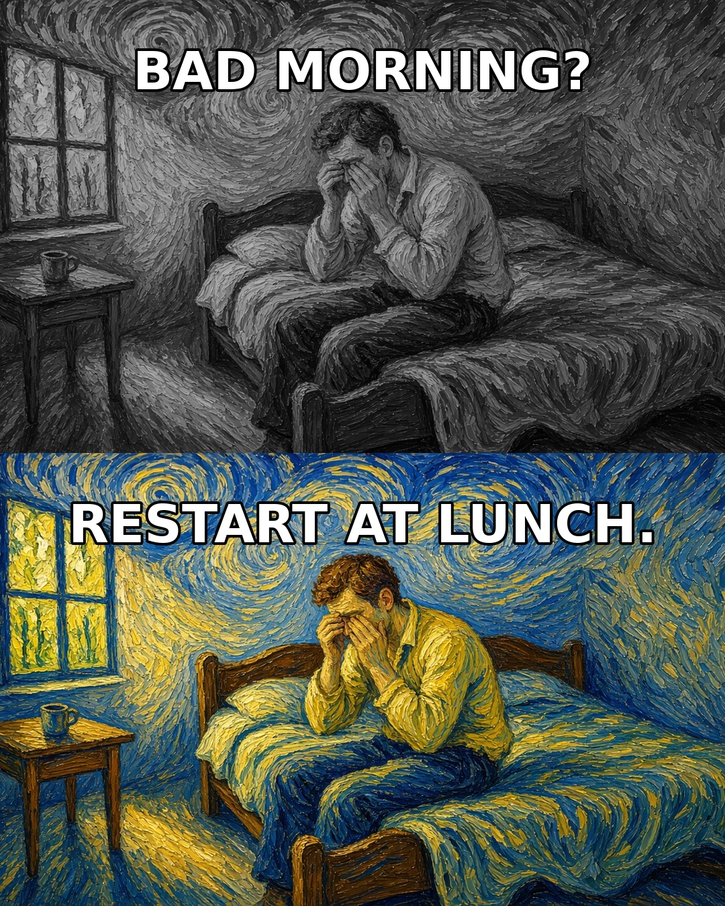
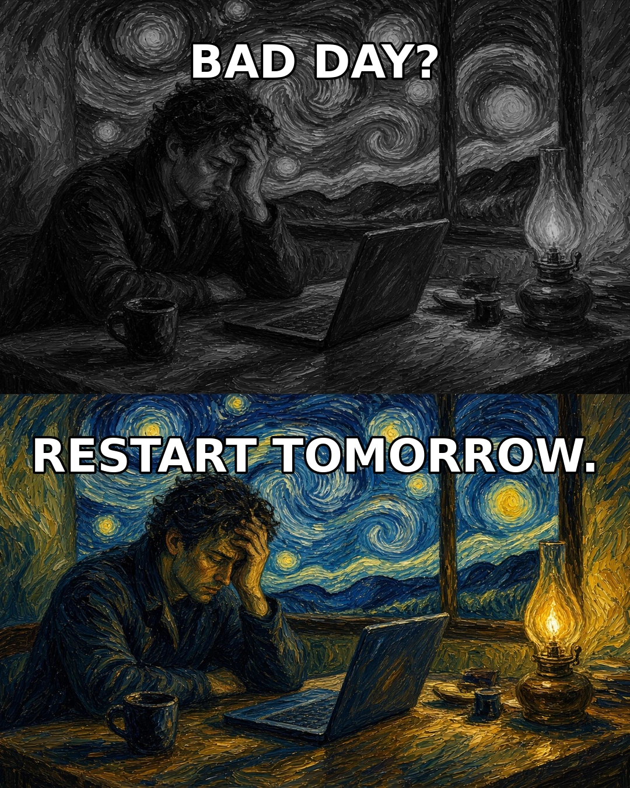
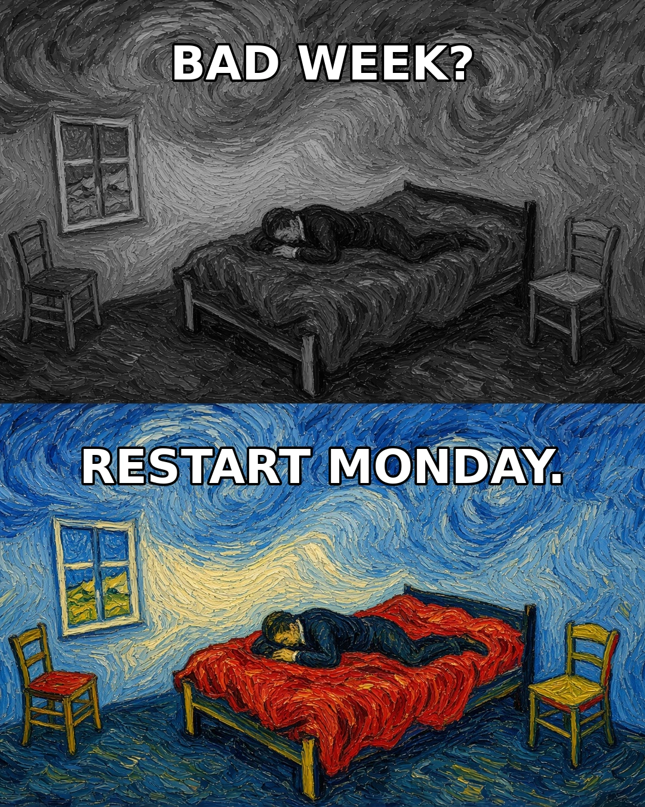
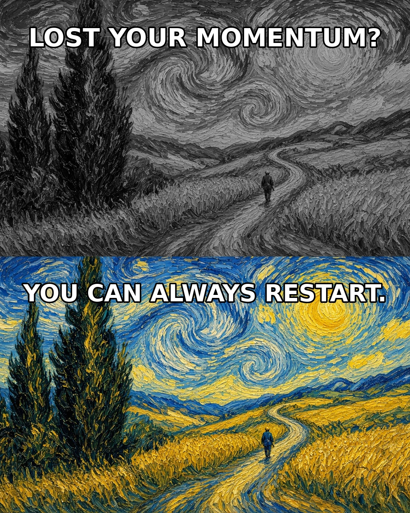
The real outputs: the OpenSEO reel (25s, 9:16), the “AI Employees” reel, and a 5-slide Van Gogh-style carousel (1080×1350).
Screenshot slotHair Folli 90-day SEO plan (56 tasks, Overview progress tab)
docs.google.com/spreadsheets/d/1yd7vffBIq7AD_hVqyv2Tl_WTCK091aZ35nLrUFzgwMQResults
22channels checked automatically
71applicants screened (26 + 45), $0 spent
33GBP service names cleaned
12courses added to a GBP listing
56task SEO plan across 3 pillars
03 / Case study
Internal CRM · WordPress + Google Sheets
Agency Ops CRM
The agency’s self-built operations portal, synced from Google Sheets: staff, shifts, 1,052 task logs, 7 client accounts, 13 SOP kits, appraisals and an 18-criteria skills matrix.
Read the case study →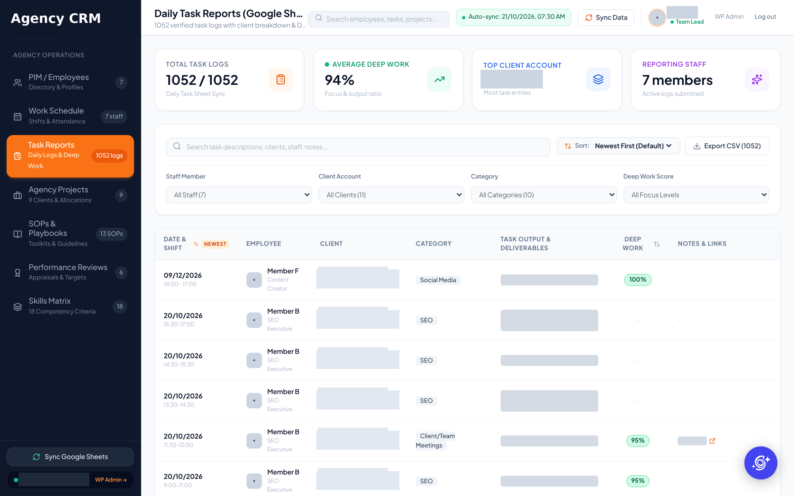
04 / Built tools